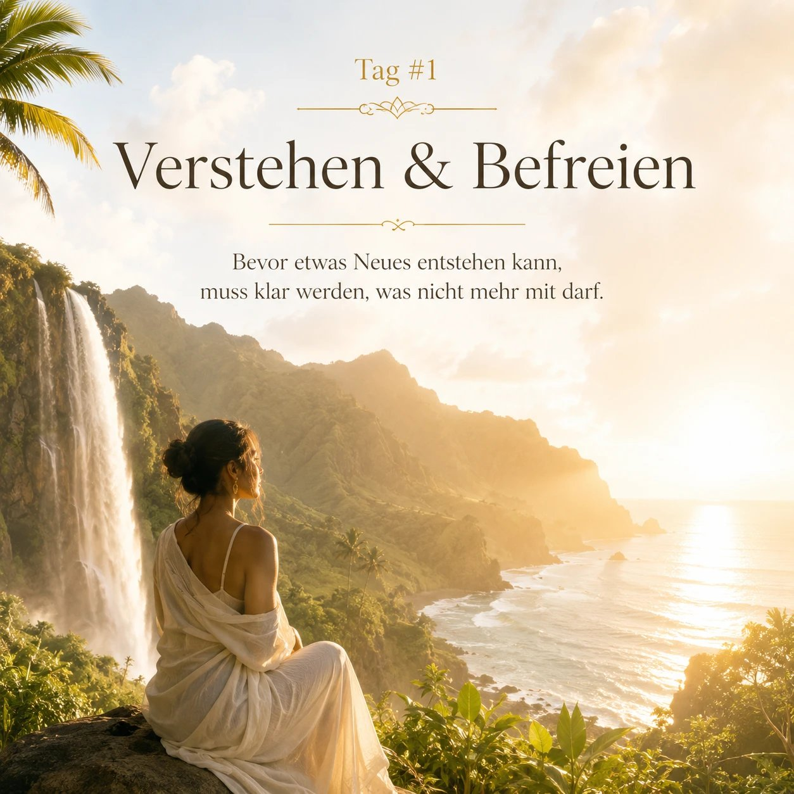

Tag 1
Verstehen + Befreien
Bevor etwas Neues entstehen kann, muss klar werden, was nicht mehr mit darf.
- Ihr Lebensweg, Ihre Zyklen, Wendepunkte und wiederkehrenden Muster.
- Welche Entscheidungen haben Sie geprägt, welche Rollen haben Sie übernommen?
- Ihre Soul-Wunde erkennen und verstehen, wie daraus Schutzstrategien wie Leistungsdruck, Rückzug, Kontrolle oder Anpassung entstanden sind.
- Die verborgene Kraft hinter Ihrer Soul-Wunde freilegen.
- Erkennen, was Sie heute Energie, Geld, Lebensfreude und Wirkung kostet.
- EAGLE, Entlassen und Anheben, als Übergang vom alten Muster in eine neue innere Position.
Kernfrage: Was darf enden, damit mein nächstes Kapitel überhaupt beginnen kann?